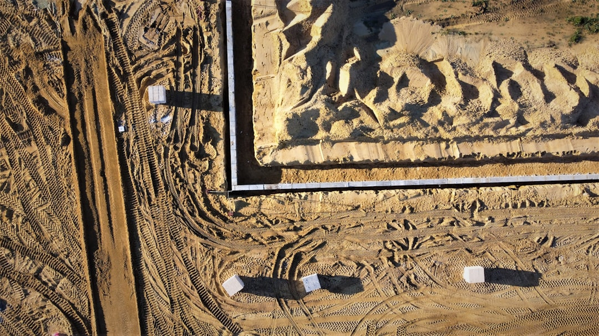

For Perth retaining walls, the sourced numbers are the 0.5 metre permit trigger, AS 4678 for engineered retaining structures and 2 main systems highlighted by the provider, limestone block and post and panel. No fixed price or build timeframe is supplied, so a useful quote needs retained height, site access, material choice, drainage scope and whether the wall is on a boundary, tiered, loaded or linked to other building work.
For homeowners comparing retaining wall contractors perth options, the practical decision is whether the wall, site and material choice need engineering, permit advice or a simpler garden scale build.
Retaining Wall Contractors Perth Explained
Retaining Wall Perth frames the choice around two local systems, limestone block and post and panel, but the first question is what the wall must retain. A low garden terrace, boundary edge, driveway side and taller structural wall can all require different quote checks.
Before comparing materials, record retained height, whether the wall touches a boundary, what sits above it and whether it affects adjoining land or other building work. The published guidance says those details can change the permit and engineering pathway.
- Confirm the retained height and ask whether tiered walls are assessed together.
- Ask whether AS 4678 design is likely for the proposed scope.
- Describe any fence, driveway, building area or garden bed above the wall.
- For repairs, share photos of cracking, bulging, leaning or drainage failure.
Choosing between common systems
Limestone block is presented as a natural fit for Perth's sandy, limestone backed Swan Coastal Plain blocks and for streetscapes where a local stone look suits the property. It can be natural or reconstituted, but appearance should not outrun footing, access, drainage and height checks.
Post and panel walls use galvanised or concrete posts with precast concrete panels slotted between them. The published guidance describes them as fast, consistent finish systems often used for boundary and driveway retaining, so they are worth pricing where a repeatable run and clean set out matter.
Other materials have narrower roles. Timber sleepers are described for gardens, terraces and low boundary retaining. Rock and boulder walls suit Perth hills and granite outcropped sites where a rugged, free draining finish is wanted. Besser block is positioned for taller, steel reinforced, core filled walls and rendered finishes.
Drainage belongs in the written scope
The provider names ag drain, gravel and geofabric behind every wall, and ties drainage to performance in winter saturated sandy ground. That makes drainage a quote item, not a verbal extra. A proposal that prices blocks or panels without explaining what sits behind them is incomplete.
Ask how water is collected, where it discharges, what free draining material is included and how geofabric is used. On a failed wall, ask whether the assessment covers drainage, footing condition, material state and the failure mode. A leaning timber section and a bulging block wall are different repair problems.
For a companion overview, this independent Perth retaining wall guide keeps the same focus on wall type, site condition and approval questions.
Who this applies to
This guide applies to Perth owners planning a new wall, replacing a failed wall or checking whether a quote covers the structural and approval issues. It is most useful where the site has height change, sandy ground, hills terrain, a boundary interface, a driveway edge or visible movement.
It also helps owners comparing limestone, post and panel, besser block, timber sleeper, rock or boulder options. The supplied information does not give fixed prices, warranties or completion times, so those details should be requested after the contractor understands the site.
- For a new wall, ask what information is needed before pricing is reliable.
- For a boundary wall, ask how local approval and adjoining land issues are checked.
- For a repair, ask whether replacement is more realistic than patching.
Quote checks before work starts
A useful quote should identify the wall system, retained height, drainage build up, access limits, spoil handling, likely permit pathway and any engineering assumptions. If the wall is near a fence, boundary, driveway or other building work, that interaction should appear in the scope.
For approval, the published guidance says a building permit is generally needed once a wall retains more than 0.5 metres of ground, and that other conditions can trigger approval at any height. It also notes that some councils, including Wanneroo and Melville, may count combined tiered wall height toward that figure. Confirm the exact rule with the relevant local government before starting.
- Ask how height is measured and whether tiers are combined.
- Ask whether AS 4678 design is included or unnecessary.
- Ask what drainage materials are included and where water goes.
- Ask how existing failure was assessed if the wall is being repaired.
- Describe the site. Record the suburb or postcode, retained height, boundary position, access limits and what sits above the proposed wall.
- Shortlist the system. Compare limestone, post and panel or another material after the wall's structural job is clear.
- Check approvals. Ask the contractor and local government whether the 0.5 metre trigger, boundary issues or other building work affect permits.
- Confirm drainage. Request the ag drain, gravel, geofabric and discharge details in writing before comparing prices.
- Review repair scope. For a failed wall, ask whether the quote is based on drainage, footing condition, material state and the actual failure mode.
| Option | Best fit from supplied material | Main quote question |
|---|---|---|
| Limestone block | Sandy Swan Coastal Plain blocks and local streetscape fit | Are height, footing and drainage suitable for this block? |
| Post and panel | Boundary and driveway retaining with a consistent finish | Are posts, panels, drainage and access clearly specified? |
| Besser block | Taller engineered walls and rendered finishes | Is steel reinforcement, core filling and engineering included? |
| Timber sleeper | Garden terracing and low boundary retaining | Is it suitable for the retained height? |
| Rock and boulder | Perth hills and granite outcropped sites | Can batter, access and drainage be achieved? |
Common questions
Do Perth retaining walls always need a permit? No. The supplied page says a building permit is generally needed once a wall retains more than 0.5 metres of ground, but a wall of any height can need one where boundary, adjoining land or other building work issues apply. Confirm the rule with the local government before work starts.
Which material is best for a Perth retaining wall? The provider highlights limestone block and post and panel as the two systems Perth commonly builds with. Limestone suits many sandy, limestone backed blocks and local streetscapes, while post and panel is commonly used for boundary and driveway retaining with a consistent finish.
What should be included in a repair quote? A repair quote should start with the failure mode, drainage, footing condition and material state. The supplied page notes that a leaning timber sleeper section is different from a bulging block wall needing partial demolition and rebuild.
Can I rely on a fixed price before a site check? The supplied material does not state fixed prices. A reliable quote needs retained height, material, access, drainage, permit and engineering context.
This guide covers Perth retaining wall planning, material selection, drainage, permits, engineering questions and quote checks.